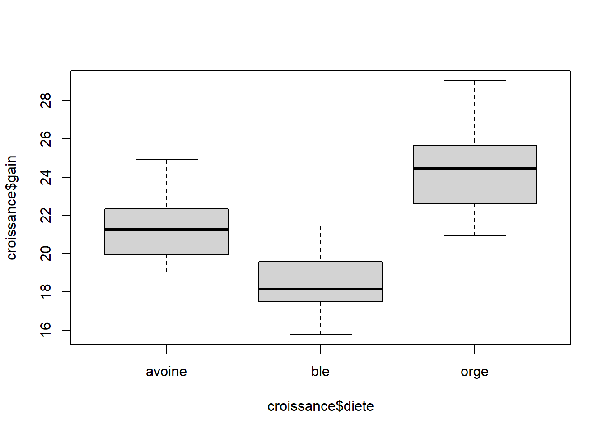
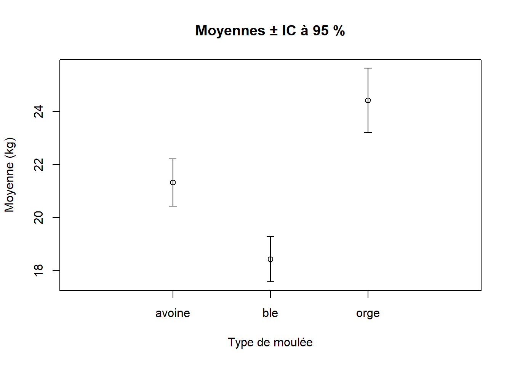

2.3 Exercices
2.3.1 Question 1
a. Parmi les stratégies d’échantillonnage suivantes, laquelle est la plus appropriée pour comparer la densité de pins gris dans cinq différents types d’habitats?
- échantillonnage complètement aléatoire
- échantillonnage systématique
- échantillonnage systématique
- échantillonnage stratifié aléatoire
Réponse
(d) échantillonnage stratifié aléatoireb Dès qu’un échantillon comporte moins de 50 observations, il faut utiliser la distribution normale. Vrai ou faux?
Réponse
Faux – Il faut plutôt utiliser la distribution du \(t\) de Student.c Nommez un problème qui peut survenir dans un échantillon.
Réponse
La non-représentativité de l’échantillon, les erreurs de saisies des données ou de mesure, et les erreurs liées à la probabilité de détection sont tous des problèmes potentiels dans un échantillon.d La distribution cunéiforme permet de sélectionner aléatoirement des unités dans une population. Vrai ou faux?
Réponse
Faux – C’est plutôt la distribution uniforme qu’on utilise.e Donnez un désavantage d’utiliser une stratégie d’échantillonnage systématique.
Réponse
L’échantillonnage systématique ne donne pas un échantillon représentatif en présence de patrons périodiques et les inférences qu’on peut en tirer sont très limitées en présence d’une seule grille.f Quelle stratégie d’échantillonnage serait la plus appropriée pour étudier l’occurrence d’un petit champignon très rare et difficile à voir sur la litière forestière?
Réponse
La méthode d’analyse d’occupation de sites serait la plus appropriée, mais, à la limite, l’échantillonnage adaptatif pourrait aussi être approprié.2.3.2 Question 2
a Importez le jeu de données croissance.csv, qui présente la croissance en kg de bovins auxquels on a donné l’une des trois types de moulées.
Réponse
##importer jeu de données
croissance <- read.table("Module_2/data/croissance.csv", header = TRUE)
##on regarde une partie du jeu de données et sa structure
head(croissance)## diete gain
## 1 ble 17.37125
## 2 ble 16.81489
## 3 ble 18.08184
## 4 ble 15.78175
## 5 ble 17.70656
## 6 ble 18.22717## 'data.frame': 48 obs. of 2 variables:
## $ diete: chr "ble" "ble" "ble" "ble" ...
## $ gain : num 17.4 16.8 18.1 15.8 17.7 ...b Calculez l’intervalle de confiance à 95 % autour de la moyenne de chacun des trois groupes définis par le type de moulée.
| Vous trouverez de plus amples détails sur le script suivant dans le forum du cours à l’entrée “Explications sur le script du calcul de l’intervalle de confiance”. |
Réponse

##on crée un sous-jeu de données pour chaque diète
avoine <- croissance[croissance$diete == "avoine", ]
ble <- croissance[croissance$diete == "ble", ]
orge <- croissance[croissance$diete == "orge", ]##avoine - IC à 95%
n.avoine <- nrow(avoine)
moy.avoine <- mean(avoine$gain)
sd.avoine <- sd(avoine$gain)
SE.avoine <- sd.avoine/sqrt(n.avoine)
IC.inf.avoine <- moy.avoine + qt(p = 0.025, df = n.avoine - 1) * SE.avoine
IC.sup.avoine <- moy.avoine - qt(p = 0.025, df = n.avoine - 1) * SE.avoine##ble - IC à 95%
n.ble <- nrow(ble)
moy.ble <- mean(ble$gain)
sd.ble <- sd(ble$gain)
SE.ble <- sd.ble/sqrt(n.ble)
IC.inf.ble <- moy.ble + qt(p = 0.025, df = n.ble - 1) * SE.ble
IC.sup.ble <- moy.ble - qt(p = 0.025, df = n.ble - 1) * SE.ble##orge - IC à 95%
n.orge <- nrow(orge)
moy.orge <- mean(orge$gain)
sd.orge <- sd(orge$gain)
SE.orge <- sd.orge/sqrt(n.orge)
IC.inf.orge <- moy.orge + qt(p = 0.025, df = n.orge - 1) * SE.orge
IC.sup.orge <- moy.orge - qt(p = 0.025, df = n.orge - 1) * SE.orge##assembler le tout dans un petit tableau
out <- data.frame(Groupe = c("avoine", "ble", "orge"),
Moyenne = c(moy.avoine, moy.ble, moy.orge),
IC.inf = c(IC.inf.avoine, IC.inf.ble, IC.inf.orge),
IC.sup = c(IC.sup.avoine, IC.sup.ble, IC.sup.orge))
out## Groupe Moyenne IC.inf IC.sup
## 1 avoine 21.32882 20.44115 22.21649
## 2 ble 18.43134 17.57944 19.28324
## 3 orge 24.42164 23.21268 25.63060
c Présentez graphiquement les moyennes avec des barres d’erreur à l’aide des fonctions plot( ), axis( ), points( ) et arrows. À noter que le plus simple est de créer le graphique par étapes:
- Utilisez
plot( )pour créer un graphique vide avec les étiquettes des axes et les bonnes limites, mais en supprimant l’axe des x avec l’argumentaxt = "n". La raison en est simple: à chaque fois que l’on spécifie un graphique d’une variable numérique en fonction d’une variable catégorique, commediete, R donne un diagramme de boîtes et moustaches – ce n’est pas ce qu’on veut ici. - Ajoutez l’axe des x’s à l’aide de
axis( ). - Ajoutez les points avec
points( ). - Ajoutez les barres d’erreur avec
arrows( ). Cette dernière fonction nécessite un point de départ (x0, y0) et un point d’arrivée (x1, y1). Bien qu’elle puisse créer des flèches, on peut obtenir des barres d’erreur en utilisantangle = 90. L’argumentcode = 3spécifie que l’on veut une flèche au point d’arrivée et au point de départ.
| Vous trouverez de plus amples détails sur le script suivant dans le forum du cours à l’entrée “Explications sur le script du graphique de la moyenne et des barres d’erreur”. |
Réponse
##présenter les résultats dans un graphique
##créer un graphique vide
##voir ?par pour les paramètres graphiques
plot(y = 0, x = 0, xlab = "Type de moulée",
ylab = "Moyenne (kg)", main = "Moyennes ± IC à 95 %",
ylim = c(min(out$IC.inf), max(out$IC.sup)),
##détermine les limites sur le graphique
xlim = c(0, 4),
xaxt = "n") #on n'affiche pas l'axe des x's tout de suite
##on ajoute l'axe des x's
axis(side = 1, at = c(1, 2, 3), labels = c("avoine", "ble", "orge"))
##ajouter les points
points(y = out$Moyenne, x = c(1, 2, 3))
##ajouter les barres d'erreurs
arrows(x0 = c(1, 2, 3), x1 = c(1, 2, 3), y0 = out$IC.inf,
y1 = out$IC.sup, length = 0.05, code = 3, angle = 90)